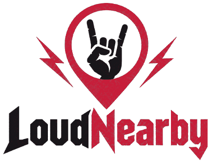
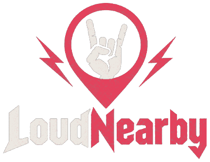

Loud Nearby — koncerty metal & rock


Metal i rock (plus pokrewne brzmienia: punk, gothic/post-punk, tribute) na najbliższy rok w całej Polsce - filtruj wg gatunku, i miasta. Zebrane z portali i klubów z całej Polski.
Koncerty
| Data | Zespół | Miejsce | Gatunek | Akcje |
|---|

Najczęściej zadawane pytania
Jak często aktualizowana jest lista koncertów?
Lista jest aktualizowana raz w tygodniu. Aktualny stan danych zawsze widać w nagłówku strony, przy napisie „stan na”.
Skąd pochodzą dane o koncertach?
Zestawienie przygotowywane jest z pomocą AI na podstawie zapowiedzi z portali muzycznych i klubów z całej Polski. To nie jest pełna, oficjalna lista wszystkich koncertów w kraju — dokładne godziny i dostępność biletów zawsze warto zweryfikować bezpośrednio na miejscu.
Jakie gatunki muzyczne obejmuje strona?
Loud Nearby skupia się na koncertach metalowych, rockowych, punkowych, gothic/post-punkowych oraz wieczorach tribute — listę można filtrować wg tych pięciu gatunków.
Jak zgłosić koncert lub błąd w danych?
Napisz na malik.michal85@gmail.com — chętnie poprawię błędne dane, dodam koncert, którego brakuje.